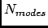
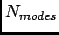

Next: Parameters
Up: Quasi Harmonic Analysis
Previous: Quasi Harmonic Analysis
Contents
Theory and implementation
QHA is a method for obtaining effective modes of vibration from fluctuations calculated by a MD
simulation. The underlying principle is that from atomic fluctuations, an effective force field can be calculated
relative to the average dynamic structure that yields the same fluctuation matrix as that obtained from a normal mode
calculation. Since the fluctuation matrix is inversely proportional to the effective force constant matrix, they have common
eigenvectors which correspond to the quasiharmonic modes of vibration. Quasiharmonic modes can be analyzed in the same way
as normal modes, and comparison of the results with those from harmonic approximation calculations for the same system is
straightforward.
The way to perform a QHA in nMOLDYN is based on the diagonalization of the fluctuation matrix that can be easily retrieved
from a MD simulation. Indeed, from a MD simulation, coordinates which define the position of all atoms as a function of time are
saved at each step of the MD. From these coordinates, both the average position
and the
covariance matrix of fluctuations about the average position can be calculated the latter being defined as:
with variances as the diagonal elements and with covariances as the off-diagonal elements.
Once the covariance matrix of fluctuations is obtained, the Quasi-Harmonic modes of vibration and their
corresponding frequencies  are calculated by solving (diagonalizing) the equation:
are calculated by solving (diagonalizing) the equation:
where is the identity matrix and
being the diagonal mass matrix.
The solutions of 4.102 yielding:
and
Once the normal modes have been obtained, a great variety of analysis can be performed. nMOLDYN proposes some of
them namely:
- Local and global character indicator
Normal modes of vibration can involve all the atoms of the system, as in the case of low-frequency global deformation motions, or
be localized in one particular part of the molecule. It is useful to have indicators which define the degree of global character or local
character for particular modes of vibration. Since the eigen vectors form an orthonormal basis
where N is the number of selected atoms, a local character indicator is given by:
which is large for modes i with significant local character. The global character indicator is given by:
which is large for modes i without significant global character. These indicators are not invariant with the orientation of the
system and are only qualitative indicators of character because only the sum of the squares is invariant to rotation. If the motion is
dominated by a single component of a single-atom, then will be close to unity for that element and zero for all others. This
results in the maximum possible value for the local characteer indicator of 1 and a maximum for the lack of global character
indicator of . The other extreme is represented by a net translation of all atoms in the (1,1,1) direction, where all elements are the
same with a value of . In this case the local character indicator has a minimum value of and the lack of global character
indicator will hav a minimum of 1. Modes with significant mixing of global and local character may have a large local indicator and a small lack of global
character indicator; thus two indicators are needed to evaluate the character of the motion.
- Projection of MD trajectories onto normal modes
It is useful to compare normal modes of vibration (or other type of motion) with the MD simulation. This allows examination of the
amplitudes of this type of motion and the time scales. This is a straightforward procedure in which the effects of solvent damping may be explored for the *
case in which the MD simulation is carried out with explicit solvent even if the normal mode calculation is carried out in vaccuum. The procedure
is to generate a time series of the projection of the difference of trajectory position and the average position into a mode of interest given by:
This time series can be evaluated with standard procedures to determine correlation functions and spectra. It is also useful in analyzing the
results of a QHA analysis to determine which modes are predominantly vibrational in character and which arise mainly from jumping between energy
substates.
Beside the quantitative analysis described above, one of the best way to understand a normal mode of vibration is through a
visual examination. To do this, a trajectory must be created which depicts the molecular system as a function of time from a
given starting configuration. For a set of normal modes to view, this trajectory is given by:
where and are respectively the amplitude and frequency of the motion associated to normal mode  and
 is the number of selected normal modes to visualize. nMOLDYN allows the visualization of normal modes through a
specific viewer (see Section 4.3.3).
and
 is the number of selected normal modes to visualize. nMOLDYN allows the visualization of normal modes through a
specific viewer (see Section 4.3.3).
For more details about QHA and related techniques please refer to Ref. [53]
Next: Parameters
Up: Quasi Harmonic Analysis
Previous: Quasi Harmonic Analysis
Contents
pellegrini eric
2009-10-06